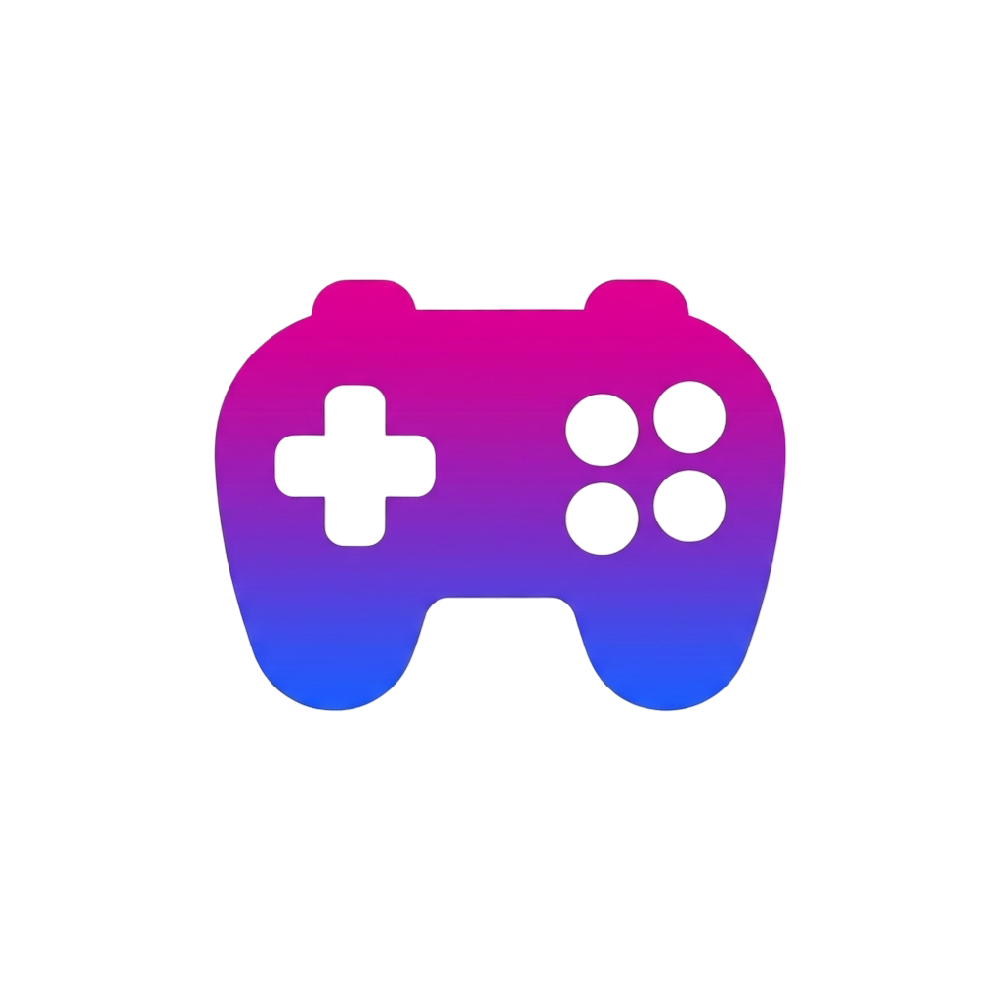
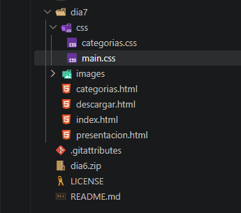
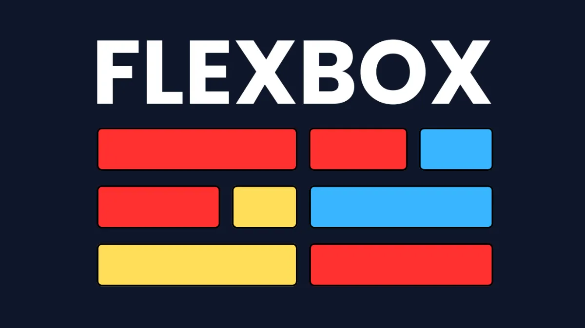

Presentación

Mi página web se llama Game Review y está desarrollada con HTML y CSS. Está organizada en varias páginas: Inicio, Categorías, Descargas y Presentación. También cuenta con una carpeta de imágenes y una carpeta CSS donde guardo los estilos. Para organizar los elementos utilizo Flexbox, en la cabecera y en la alineación de los botones. También utilizo CSS Grid en la página de descargas para distribuir los juegos en columnas. Para reutilizar los estilos, tengo un archivo principal llamado main.css, que contiene los colores, la navegación, los botones y el pie de página. Además, utilizo una hoja de estilos adicional para las categorías.
index.html: es la página principal. categorias.html: muestra las categorías de videojuegos mediante tarjetas codepen. descargar.html: organiza imágenes de juegos y botones que llevan a una página externa de Steam. presentacion.html: contiene la presentación del proyecto. css/main.css: reúne los estilos generales compartidos. css/categorias.css: contiene estilos específicos para la página de categorías. images/: almacena las imágenes y el logotipo.


Se puso en práctica el modelo de diseñlo Flexbox para distribuir y alinear elementos en una misma dirección también para centrar los botones, En descargar.html utilizo contenedores con la clase fila-descargas. En main.css están organizados con CSS Grid: Esta técnica distribuye los elementos en tres columnas por fila. Se utilizaron estilos adicionales por ejemplo el uso de la propiedades hover.